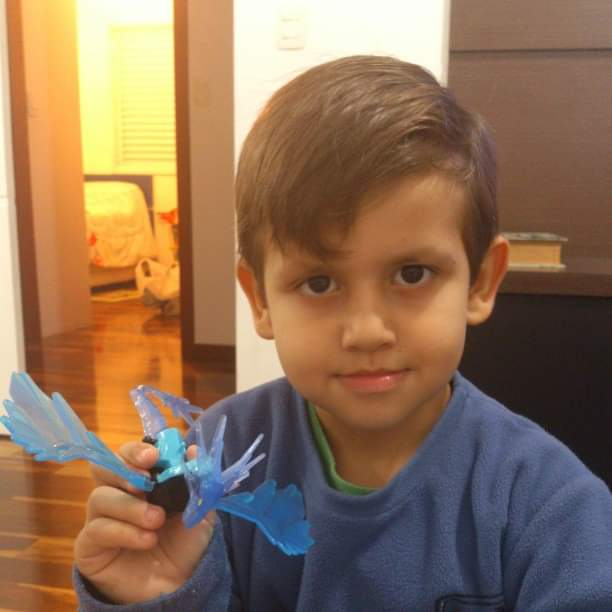

A Store Berry nasceu do desejo simples de compartilhar o sabor inigualável de morangos cultivados com amor e respeito à natureza. Acreditamos que o frescor e a qualidade mudam tudo, e é por isso que controlamos cada etapa, desde o plantio na nossa fazenda até a chegada à sua mesa.

Mais do que apenas vender produtos, nós celebramos a fruta perfeita. O nosso diferencial está na paixão artesanal e no cuidado que garante um sabor que remete à infância.
Colheita Manual: Nossos morangos são colhidos à mão, apenas no pico de maturação, para garantir a máxima doçura e suculência.
Receitas de Família: Nossas geleias e doces são preparados em pequenos lotes, seguindo métodos artesanais que preservam a pureza e a intensidade do sabor.
Compromisso com o Campo: Priorizamos práticas de cultivo sustentáveis, cuidando da terra para garantir a qualidade hoje e no futuro.
Somos uma equipe dedicada que coloca o coração em cada morango, e tudo começou com uma dupla apaixonada pela fruta perfeita.

Co-fundador e responsável pelo frescor e qualidade dos morangos.

Co-fundador e criador das receitas artesanais da Store Berry.
"A Store Berry é a união do cuidado do campo com o toque artesanal. Enquanto um se dedica à terra e ao frescor da colheita, o outro transforma o fruto em delícias inesquecíveis."
Henrique de Castro Aquino e Tiago Lessa Bela Keney — Apaixonados por Morangos e Fundadores da Store Berry.